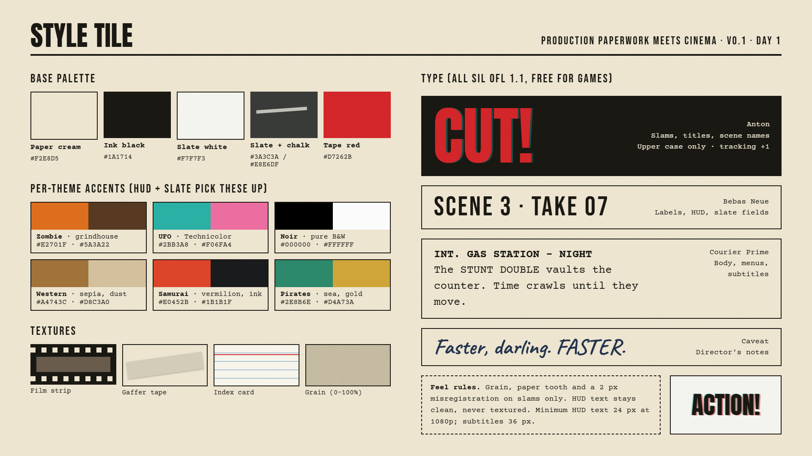
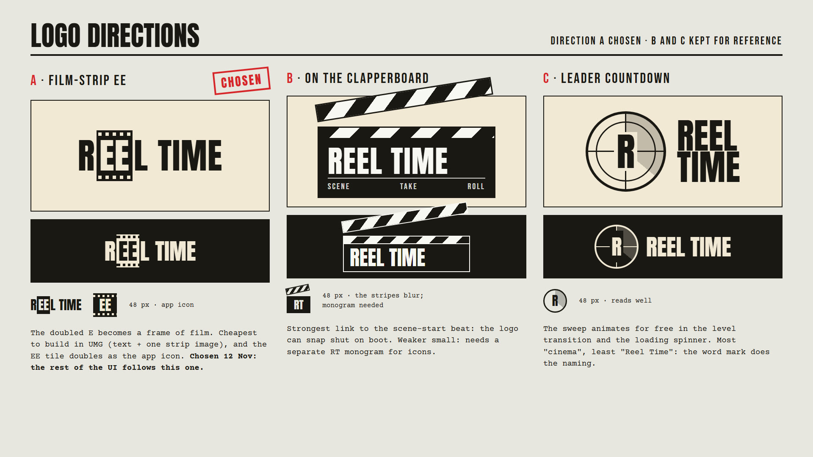

The look arrives: production paperwork, in 19 artboards
I ran the UI brief through Claude Design and got a style tile, a logo, a component sheet and 15 screens. Menus are call sheets, the pause screen is a slate that says HOLD.
Day 1, Thu 12 NovHour 2
While the crew built systems, I took the UI brief that was written before the jam and ran it through Claude Design. It came back as 19 artboards. My verdict to the Director:
"Subject to change but a decent start"
These are mockups, not screenshots. Nothing here is in the game yet, and the film titles on them are placeholders, not the game's titles.
The idea: paperwork meets cinema
Every screen is something you'd find on a film set. The main menu is a call sheet on a clipboard. The level list is a shooting schedule. Pausing drops a slate that says HOLD. Finishing a scene deals you a dailies card with your take count stamped on it.

Four typefaces do all the work: Anton for the slams, Bebas Neue for labels, Courier Prime for body text and Caveat for the director's handwritten notes. One rule I like: grain and misprinting only on the big slams. Text you have to read mid-fight stays clean.
The logo

The HUD, in three films
The HUD is the same parts in every level, recoloured by the film you're in: a slate in the corner with the scene and take, and a film strip along the bottom whose sprockets only move as fast as time does.
 HUD mockup for the zombie film: orange accents, shells for ammo.
HUD mockup for the zombie film: orange accents, shells for ammo. HUD mockup for the 50s alien film: teal and pink, plasma cells.
HUD mockup for the 50s alien film: teal and pink, plasma cells. HUD mockup for the noir film: black and white only, so warnings rely on shape and brightness.
HUD mockup for the noir film: black and white only, so warnings rely on shape and brightness.


The screens
 Scene start: the slate, then ACTION!
Scene start: the slate, then ACTION! One hit: CUT! and the take number rolls over. The whole beat is under a second.
One hit: CUT! and the take number rolls over. The whole beat is under a second. The director's cut replay overlay, with skip and fast forward.
The director's cut replay overlay, with skip and fast forward. The dailies card after a scene: takes, time against par, stars.
The dailies card after a scene: takes, time against par, stars. Level select as a shooting schedule.
Level select as a shooting schedule. The pause screen: HOLD.
The pause screen: HOLD.


What happens to it now
The UI session had already built a greybox HUD as a kit from the written brief: slate, take counter, film-strip meter, timecode and the CUT slam, wired to the game's events. Its next task is to adopt this direction: copy the artboards in as reference, build a style kit with the palette, fonts and components, and reskin that HUD. When it's on screen in the game, there'll be a before and after.